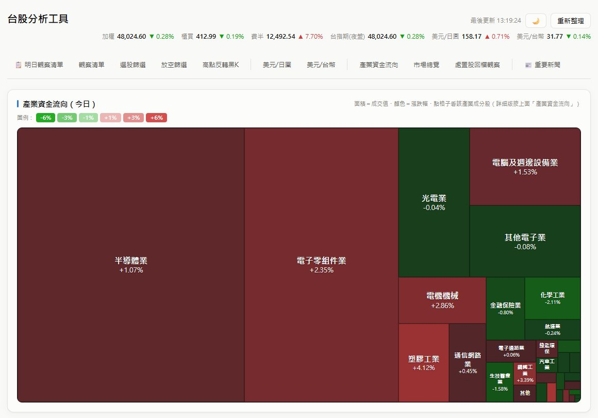

~/taiwan-stock-tool · 個人專案 · v2.0
台股分析工具
純本機執行的台股分析儀表板，整合技術面、基本面與籌碼面，輔助判斷隔天值得觀察的股票。資料即時抓取證交所、集保結算所、期交所與 Yahoo Finance 的公開 API，不需付費資料源或金鑰。
- 多因子選股篩選器：綜合月線趨勢、營收、EPS、本益比、大戶持股變化算出評分，並標示風險警示。
- K 線走勢圖、布林通道、當日分鐘走勢，以及產業資金流向熱力圖。
- 後端只用 Python 標準函式庫，並用 PyInstaller 打包成免安裝版 exe。
- Python
- JavaScript
- HTTP Server
- Open Data API
- PyInstaller
本工具僅供學習研究，所有分析結果不構成任何投資建議。